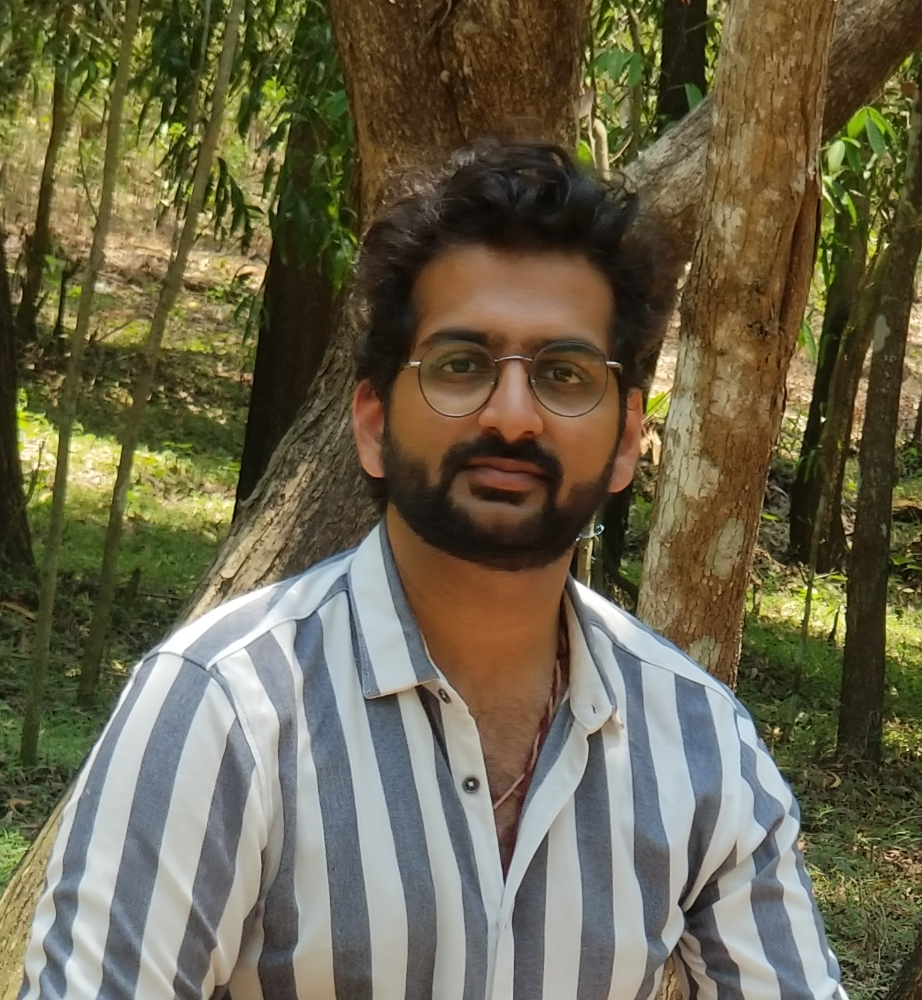

Akshay Patil

Summury
I was just 6 years old when I first saw a computer. Ever since computer's have been my life. I am more of a curious persion. I always prefer to calculate alternative ways before coming to an conclusion about any situation. Web development has been always my passion.
Education
The following are my education qualification:
- Completed my high school from P.S.S.E.M.R School, Davangere, Karnataka, India with 82% score
- Completed my pre-university degree from Vikas Pre-University College, Mangalore, Karnataka, India with 70% score
- Completed my Bachelor's in Computer science from Srinivas Institute of Technology, Mangalore, Karnataka, India
Work Experiance
I have worked on many different projects, the below are the one that I was worked on majors.
- Worked as Technical Executive in Concetrix, Bangalore, Karnataka, India for 8 months and Paytm was the client.
- Worked as Technical Executive in Zefo, Bangslore, Karnataka, India for 4 months.
- Started my own start-up company which ran for 2 years.
- Worked as Technical Executive in Diya System, Karnataka, India for 1 year and the process was New Fold Digital.
Skills
The following are my certified skills, apart from these have fundamental knowledge in many fields of computer science.
- I am a certified C developer from NIIT and my score is 98%.
- I am a cerftified C++ developer from NIIT and my score is 93%.
- I have a self leanrned skill in solving logical problems and develop algorithm for the problem.
- I am well knowleged about linus commands.
- I have a fundamental knowlege about DBMS.
- I have a fundamental knowledge on Networking.
- I have a great communication skills, I speak 4 languages: English, Hindi, Kannada, Marathi.
- I have a good knowledge in Ms office.
Projects
The following are the links to my projects,
Awards
These are the following award that I am proud of,
- I was awarded gold medal in math olypiad.
- I was awarded gold and silver medal in sports for 100 mtrs and 200 mtrs respectively.
- I was awarded 1st price in a inter-school debate compitition.